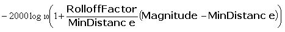
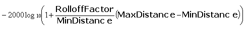
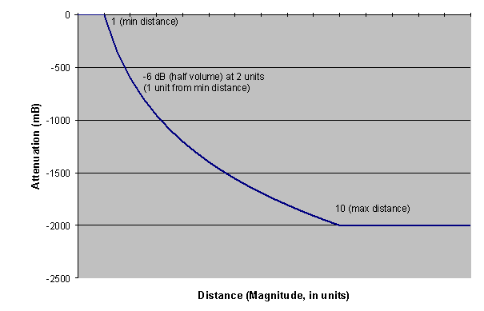
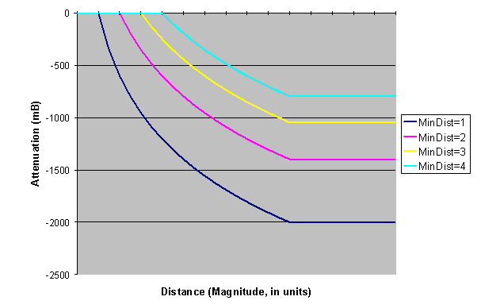
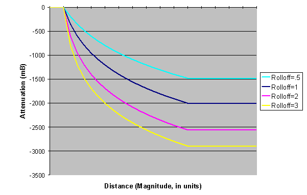
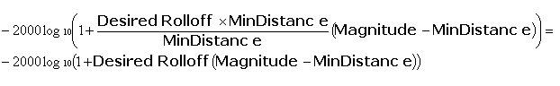
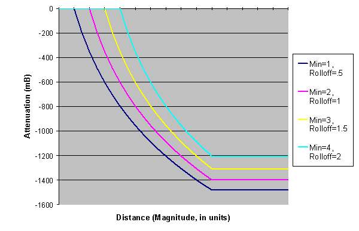

By Scott Selfon, Audio Content Consultant, Content and Design Team, Xbox Advanced Technology Group
One of the great challenges of assembling a realistic soundscape is how the listener interacts with, and perceives, sound volume. For instance, at a significant distance, the developer will want a mosquito to be nearly inaudible, while a snarling dragon at that same distance will be quite loud. The Xbox® gives a significant amount of control for this kind of behavior, but the terminology and expected behavior can often be somewhat confusing. This paper attempts to address how exactly the Xbox, or more precisely, the Microsoft® DirectSound® library, manages attenuation with distance for 3D-positioned1 sound sources, based on factors set up by the developer. Rolloff is defined here as how a sound source attenuates with distance.
DirectSound exposes several properties for a 3D-positioned sound source that can be used to manage its attenuation behavior.
Imitating the rolloff exhibited by sound sources in the 'real world' is a somewhat difficult task. For instance, although in theory, sounds should be point sources, and doubling of distance should reduce power by four times, in practice, most sounds are directional. Therefore, we use the approximation that with doubling of distance, perceived volume is generally halved (reduced by approximately 6 decibels [dB]).4
There is theoretically no attenuation when the listener and the sound source are at the exact same position (although this is, of course, generally not physically possible). As you travel away from the object, its volume drops according to the distance you are from it. If we begin at full volume at one meter (corresponding to minimum distance), at a two-meter distance, a sound is attenuated by 6 dB. At four meters, the attenuation is 12 dB. At eight meters, the attenuation is 18 dB, and so on, down toward perceived silence. As we'll see in a moment, default minimum distance and rolloff factors correspond to so-called 'real world' audio behavior.
3D-related attenuation is applied using the following rules, assuming "magnitude" is the current distance between the sound source and the listener, and RolloffFactor = global rolloff * this voice's rolloff:



Illustration Attenuation versus distance for min distance = 1, max distance = 10, and rolloff factor = 1. The sound is at half-volume at distance of 2, one-quarter volume at distance of 4, and so on. Note that within minimum distance, the sound is not attenuated (0 mB), and beyond maximum distance, no more attenuation is applied (sound remains at -2000 mB).
As you can see, for minimum distance of 1 and rolloff factor of 1, we have our so-called real-world rolloff behavior. But from the formula above, we can see that as the minimum distance increases, the actual rolloff becomes more gradual, regardless of if we alter the rolloff factor.

Illustration Attenuation versus distance comparisons for four different minimum distances with max distance = 10 and rolloff factor = 1. Note that despite the fact that the rolloff factor is constant, the rolloff itself becomes more gradual the larger the minimum distance is.

Illustration Attenuation versus distance comparisons for minimum distance = 1, maximum distance = 10, and several rolloff factors.
A typical question is how to calculate the 3D-position values so that the rolloff is directed solely by the rolloff factor, and not influenced by minimum distance. Based on the above formulas, if we set the rolloff factor to:
Rolloff factor = (our desired rolloff * minimum distance)
then the minimum-distance scaling will cancel out:

and we'll get our desired rolloff. For instance, if the minimum distance for an object was 5, and we wanted it to rolloff at twice the real-world setting, we would set the rolloff factor to 10.

Illustration Achieving the same desired rolloff (in this case, a rolloff of .5) in voices with different minimum distances. We multiply our desired rolloff by the minimum distance for a voice to set its actual rolloff.
One of the most common desired rolloff scenarios involves a sound's volume trailing off to silence at max distance. To assist content authors and programmers with these calculations, you can use the Rolloff Calculator spreadsheet tool. The Effective Silence value is your specific title's noise floor (the volume below which sounds will not be heard). Voice and mixbin headroom are the attenuation being applied to your sounds by the Xbox hardware (these can be adjusted in XACT and DirectSound; see the specific comments in the spreadsheet itself). If your source sound is not already normalized to full scale, you can adjust the Sound peak to further limit the rolloff factor. Lastly, enter the minimum distance and "silence" distance. Again, the "silence distance" will be the distance at which the sound is attenuated below your effective silence noise floor; it will often make for a logical maximum distance. The rolloff factor is then calculated for you, along with a graph showing how the sound will be attenuated with distance. If your sound is attenuating too steeply, consider raising the "effective silence" volume. Or you can use the alternative to logarithmic rolloff: custom rolloff curves created using SetRolloffCurve.
Don't like the idea of purely logarithmic attenuation? Or attenuation that doesn't necessarily reach silence? If you want your sounds to have unique attenuation properties over distance, you may want to consider using IDirectSoundBuffer8/Stream8::SetRolloffCurve. This same functionality is available in the Xbox Audio Creation Tool (XACT), via the Enable custom rolloff curve option on the 3D properties page for sounds and sound presets. This method replaces the default per-voice rolloff calculations with a curve that you provide. The curve can consist of as many points as you wish. Sounds within the minimum distance are unattenuated. Sounds from the maximum distance onward will use the final point on the curve for their volume. For instance, in the simplest case of a single point [0], sounds at maximum distance will be fully attenuated, and points in between minimum and maximum distance will be attenuated on a linear curve from 1 (full volume) down to 0 (silence). See the XDK documentation for more details, or try the SetRolloffCurve XDK sample to see custom curves in action. The sample even lets you output the points you create into a text file that you can integrate into your game code.
Rolloff is a powerful tool for enhancing (or intentionally defeating) realism in how we perceive sounds with distance. With per-voice rolloff, sounds that convey more important information for a player can be augmented to remain loud at great distances. Conversely, sounds meant to surprise a player may remain fairly quiet until the listener is right on top of them. In either case, the effective use of rolloff will add to the interest of the acoustic environment the player is placed in.
For more information about topics presented here, please consult the Xbox Audio Best Practices Guide, the Xbox Development Kit documentation, or the white papers on Audio Designer's Corner, or send an e-mail message to content@xbox.com.
1 3D-positioned sounds on Xbox are typically accomplished with HRTF processing in hardware.
2 Throughout this paper, we only discuss attenuation applied by "3D" processing. Volume can also be manipulated on a buffer (SetVolume, SetHeadroom), the mixbins it sends to (SetMixBinVolumes) and globally for mixbins (IDirectSound8::SetMixBinHeadroom). All of these are applied additively with 3D processing. See Mixing Audio for Xbox in the Audio Best Practices Guide for more details on managing audio levels.
3 The term "real world" is used here for an approximation of how sounds behave in reality.
4 Even this approximation is somewhat arbitrary. Air is far from a perfect transmission medium, so there is more loss, much of which varies with humidity, altitude, and so on.
Tuesday, January 22, 2002